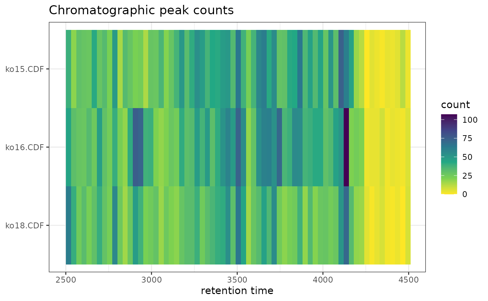

ggplot2 Version of plotChromPeakImage
Source:R/AllGenerics.R, R/gplotChromPeakImage-methods.R
gplotChromPeakImage.RdCreates an image/heatmap showing the number of detected chromatographic
peaks per sample across retention time bins. This is a ggplot2 implementation
of XCMS's plotChromPeakImage() function.
Usage
gplotChromPeakImage(
object,
binSize = 30,
xlim = NULL,
log_transform = FALSE,
msLevel = 1L
)
# S4 method for class 'XCMSnExp'
gplotChromPeakImage(
object,
binSize = 30,
xlim = NULL,
log_transform = FALSE,
msLevel = 1L
)
# S4 method for class 'XcmsExperiment'
gplotChromPeakImage(
object,
binSize = 30,
xlim = NULL,
log_transform = FALSE,
msLevel = 1L
)Arguments
- object
An
XCMSnExporXcmsExperimentobject with detected chromatographic peaks.- binSize
Numeric value specifying the bin size in seconds for the retention time axis (default: 30).
- xlim
Numeric vector of length 2 specifying retention time range. If
NULL(default), uses full retention time range.- log_transform
Logical, whether to log2-transform the peak counts (default: FALSE).
- msLevel
Integer specifying MS level (default: 1).
Value
A ggplot object showing peak counts as a heatmap with retention
time on x-axis, samples on y-axis, and color representing peak density.
Details
The function:
Bins peaks across retention time using specified bin size
Counts peaks per sample per bin
Creates heatmap with color representing peak density
Optionally applies log2 transformation to counts
See also
plotChromPeakImage for the original XCMS implementation
Examples
# \donttest{
library(xcmsVis)
library(xcms)
library(faahKO)
library(MsExperiment)
library(BiocParallel)
# Load example data
cdf_files <- dir(system.file("cdf", package = "faahKO"),
recursive = TRUE, full.names = TRUE)[1:3]
# Create XcmsExperiment and perform peak detection
xdata <- readMsExperiment(spectraFiles = cdf_files, BPPARAM = SerialParam())
cwp <- CentWaveParam(peakwidth = c(20, 80), ppm = 25)
xdata <- findChromPeaks(xdata, param = cwp, BPPARAM = SerialParam())
# Create plot
p <- gplotChromPeakImage(xdata, binSize = 30)
print(p)

# }